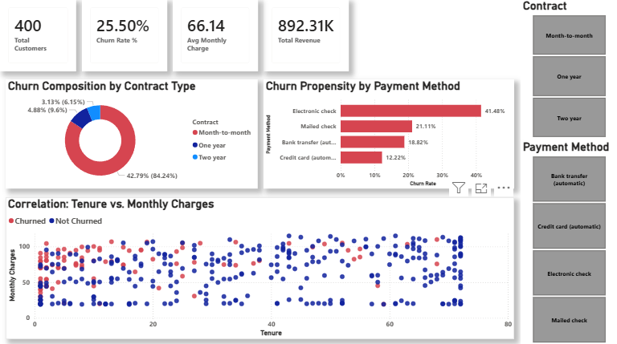
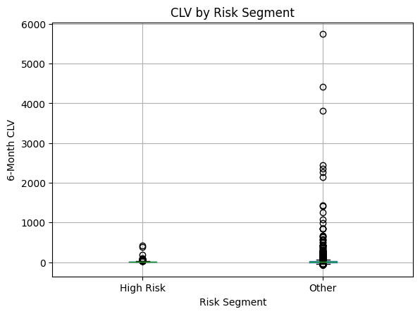

Featured Projects

Omni-Channel Retail Momentum: Marketing Intelligence & Prescriptive Analytics
End-to-end retail analytics with SQL, Python, and BI dashboards for data-driven decisions.

Telco Customer Churn Analysis
End-to-end churn analysis to identify drivers of customer attrition and retention.

Customer Churn Prediction Using Python
Predictive churn analysis with CLV-driven customer prioritization.